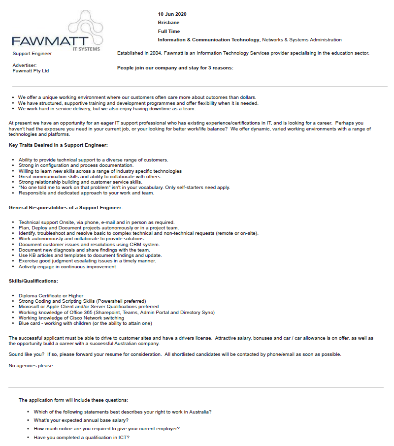

Support Engineer - FAWMATT IT SYSTEMS
Describe this job in your words
This employer is seeking a Support engineer, someone that is able to do technical support in Multiple locations, plan and deploy project solo or in a team, use a CMS to log Customer requests and support
and is required to drive to locations when needed. this possition is appealing to me because every aspect of it is what enjoy.
describe the required skills in your words
I will need a Diploma Certificate or Higher, have Strong coding and scripting skills, Microsoft or Apple Client and server qualifications prefered, a working knowledge of Office 365, working knowledge of
Cisco Network switching. and a Blue Card - working with children.
Describe the Skills you have
I am Currently doing my Bacholer's in IT, I have a working knowledge of Office 365, I have basic knowledge of Microsoft servers.
Whats your Plan to obtain the skills and qualifications?
I will become Cisco Certified, I will find a Course to become Microsft/Apple client and server qualified and otain my working with children blue card.
Myers-Brigs Test
ISTJ
The Traditionalists
I 24% INTROVERTED
Thought oriented, Reserved, Reflective, Observant
S 22% SENSING
Traditional, Realistic, Practical, Detail oriented
T 19% THINKING
Logical, Reasonable, Level headed, Values fairness
J 11% JUDGING
Organised, Systematic, Achievement oriented, Planner
ISTJ Characteristics
ISTJs make up about 9% of the population
Honest and direct
Decisive, efficient, and systematic
Dedicated and responsible
Strong-willed
Organized and reliable
Value tradition and stability
Committed and trustworthy